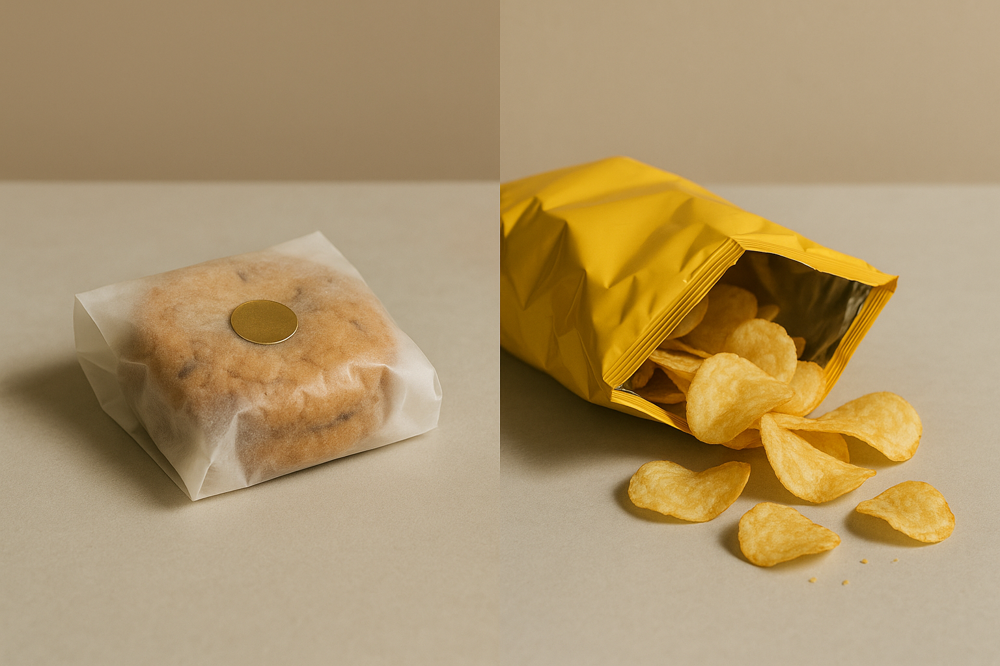

슈카월드
두쫀쿠 vs 허니버터칩, 누가 더 열풍일까?
영상 자막이 없으므로, 제목을 바탕으로 두 제품의 ‘열풍’ 현상을 신중히 비교합니다. 특정 수치나 사실은 확정하지 않고, 유행이 커지는 공통 메커니즘과 관전 포인트를 정리합니다.

도입
본 영상의 자막·대본을 확인할 수 없어, 제목과 주제 맥락에 기반한 신중한 요약을 제공합니다. 여기서는 두쫀쿠와 허니버터칩이라는 명칭이 가리키는 제품군이 온라인에서 화제를 모았다는 점에 주목해, 과거와 현재의 ‘열풍’이 어떻게 생성·확산될 수 있는지 일반적인 관찰을 정리합니다. 구체적인 판매량, 기간, 유통 경로 등은 영상에서 확인하지 못했으므로 단정하지 않습니다.
무엇을 비교하는 주제일까: 맥락과 한계
허니버터칩은 과거 대중적 화제를 모았던 스낵으로 널리 알려져 있습니다. 두쫀쿠는 최근 온라인에서 회자되는 간식 또는 디저트 계열의 별칭일 가능성이 있습니다. 다만 본문에서는 두 제품명이 상징하는 ‘유행의 크기와 속도’를 비교하는 관점에 집중하며, 구체적 정체나 수치는 확정하지 않습니다.
- 핵심 질문: 두 제품의 열풍은 어떤 요인으로 커졌을까? 과거와 현재의 확산 경로에는 무엇이 다를까?
- 주의: 제품의 정확한 스펙, 유통 구조, 시점별 판매 데이터 등은 영상 자막 부재로 확인하지 못했습니다.
열풍을 키우는 공통 메커니즘
제품 카테고리가 다르더라도, 유행을 증폭시키는 요인은 대체로 비슷하게 작동할 수 있습니다.
- 희소성·기대 형성: 초기 물량 부족이나 한정판 인식은 기대를 키우며 관심을 가속할 수 있습니다.
- SNS 바이럴: 짧은 리뷰, 인증샷, 밈 확산이 구매 의사결정 속도를 높일 수 있습니다.
- FOMO와 사회적 증거: 주변의 구매·리뷰가 누적되면 ‘나도 시도해야 한다’는 압력이 커질 수 있습니다.
- 네이밍·스토리: 말하기 쉬운 별칭과 공유하기 좋은 스토리는 입소문을 촉진할 수 있습니다.
- 즉각 체험 가능성: 간편한 시식·공유가 가능한 상품일수록 확산 속도가 빨라질 수 있습니다.
두쫀쿠 vs 허니버터칩: 비교 관전 포인트
두 유행을 직접 대조하려면, 다음과 같은 지점을 살펴볼 수 있습니다. 아래 항목은 일반적 비교 틀이며, 특정 사실로 단정하지 않습니다.
- 카테고리 차이: 스낵과 디저트(또는 유사 카테고리)는 구매 빈도, 보관성, 충동구매 가능성이 다를 수 있습니다.
- 유통 경로: 편의점·대형마트 등 광범위 유통과 특정 채널 중심 유통은 품절 체감과 확산 경로가 달라질 수 있습니다.
- 공급 유연성: 대량 생산 체계는 증산 대응이 빠를 수 있고, 소량·특정 채널 중심은 병목이 생길 수 있습니다.
- 수요 지속성: ‘새로움’ 효과가 약해진 뒤에도 반복 구매가 이어지는지, 시즌성에 좌우되는지 확인할 필요가 있습니다.
- 소비층 특성: 연령대·지역·커뮤니티별 반응 차이는 유행의 깊이와 폭을 가르는 요인이 될 수 있습니다.
열풍 판단을 위한 체크리스트
확정적 결론 대신, 다음과 같은 신호를 종합적으로 관찰하면 유행의 규모와 지속 가능성을 가늠하는 데 도움이 됩니다.
- 검색량·언급량 추이: 검색 트렌드와 SNS 해시태그 증가 속도
- 재고·품절 신호: 오프라인 품절 빈도, 대기줄·입고시간 공유 빈도
- 리셀 프리미엄: 되팔이 가격 형성 여부와 지속 기간
- 콘텐츠 파급: 리뷰·먹방·짧은 영상의 조회수 변동과 확산 속도
- 반복 구매 정황: ‘한 번 이슈’ 이후에도 후기·재구매가 이어지는지
시사점 또는 요약
자막 부재로 영상의 구체적 주장과 수치를 확인할 수 없으므로, 본 글은 제목을 바탕으로 한 조심스러운 비교 관점만 제시했습니다. ‘누가 더 열풍인가’라는 결론보다, 열풍을 키우는 메커니즘과 데이터 신호를 관찰하는 것이 실제 의사결정(구매·유통·마케팅)에 더 유용할 수 있습니다.
출처
- 원본 영상 제목: 두쫀쿠 vs 허니버터칩, 누가 더 열풍일까?
- 채널명: 슈카월드
- 원본 URL: https://www.youtube.com/watch?v=rmTeEg75dJc
- 생성 기준: 영상 메타데이터 기반 요약(자막/오디오 전사 접근 불가)